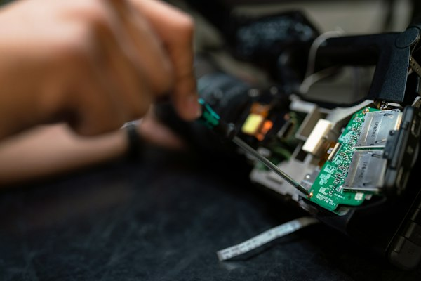

Native or cross-platform, decided properly
We compare one shared codebase against separate Android and iOS builds using your real requirements — camera, background work, offline use, budget for ongoing updates — then write the reasoning down.
A manager in Parramatta has three quotes for an app on the desk and no sensible way to compare them. One says native, one says cross-platform, one says build both. Nobody has asked what the app is for, how often a customer would open it, or whether the same job could be done by a page on the website that already exists. The numbers differ by a lot, and so do the assumptions underneath them.
Onva Labs approaches mobile app development in Sydney by starting with that question rather than with a platform. We map what the app has to do, say plainly when a good mobile website would cost less and work better, and only then choose between native and cross-platform. When an app is the right call we build it in Flutter or React Native, take it through both app stores, and keep maintaining it afterwards.
Six parts of a mobile app project where the choice you make early decides what the app costs to run for years, not just what it costs to build this quarter.
We compare one shared codebase against separate Android and iOS builds using your real requirements — camera, background work, offline use, budget for ongoing updates — then write the reasoning down.

Plenty of apps are websites with an icon. If that is your case we say so, because a fast mobile site or a progressive web app is cheaper to build and cheaper to keep.
Flutter suits apps where the interface is custom and should look identical on both platforms. One codebase, consistent rendering, and a single queue of changes instead of two.

React Native suits teams already working in JavaScript and React, because the same people can maintain the app and the website without learning a second language and a second toolchain.

We ship a first version carrying only the features that prove the idea, put it in front of real users, and let their behaviour decide what gets built next.
We prepare store listings and privacy declarations, handle review feedback, connect the app to your existing systems through APIs, and keep it working as Android and iOS change.
We are willing to talk you out of an app. Businesses across Sydney and Parramatta arrive with a quote in hand, and if a mobile website answers the need for less money, we say so.
Flutter and React Native are tools, not loyalties. We pick the one that fits your feature list and the people who will maintain it, and we say what you give up by choosing it.
App store submission is part of the job, not homework handed back to you. Listings, screenshots, privacy declarations and responses to review feedback are handled by the same team that built the app.
An app is not finished at launch. Android and iOS keep changing, so mobile app maintenance is planned from the first week rather than discovered when the app stops opening.
We work out what the app must do, and whether an app is the right answer at all.
A clickable version of the main screens, tested on real phones before any production code is written.
Build, test on Android and iOS devices, then submit to both stores and watch the first release.
Updates for new operating system versions, fixes drawn from real usage, and features as they earn their place.
Once you know which platform the work belongs on, these pages go deeper, including the cheaper option that is worth ruling out before you commit.

The detail on building for Android: Kotlin, device fragmentation, Google Play review, and the handsets Australian customers actually carry.
View service
The detail on building for iPhone and iPad: Swift, App Store review expectations, and how iOS users tend to behave once an app is installed.
View service
The cheaper middle path. A website that installs to the home screen and works offline, with no app store standing between you and your customers.
View serviceOften a website will do. If people deal with you once or twice a year, an app adds an install step between them and the thing they came for. Apps earn their place through repeat use, notifications, offline work, or device hardware like the camera. We ask which of those applies to you before quoting anything.
It depends on the features. Cross-platform app development with Flutter or React Native gives you one codebase for Android and iOS, which usually costs less to build and considerably less to maintain. Native becomes the better choice when an app leans heavily on platform-specific hardware or system behaviour. We make the call against your feature list, not a preference.
Maintenance, which almost everyone underestimates. Android and iOS release new versions every year, store policies shift, and libraries need updating or the app eventually breaks. We also watch crash reports and real usage from the first release onwards. Mobile app maintenance is quoted as ongoing work from the start, never raised later as a surprise.
Tell us who your users are and what the app has to do. We will give you a straight recommendation, including when a mobile website is the better buy.